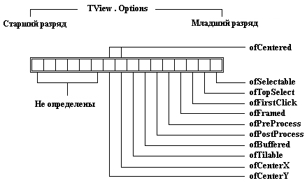

|
|
|
|
Поле Options
Поле Options представляет собой шестнадцатиразрядное слово, биты (разряды) которого показаны на рис. 17.8.

Рис.17.8. Разряды поля Options
ofSelectable
Если этот флаг установлен (имеет значение 1), пользователь может выбрать видимый элемент мышью или клавишей Tab. Если Вы поместили на экран информационный элемент, Вам может потребоваться, чтобы пользователь не мог выбрать его. Например, статические текстовые объекты и рамки окон обычно не могут выбираться и имеют ofSelectable = 0.
ofTopSelect
Видимый элемент будет передвигаться наверх в смысле Z-упорядочения, пока не станет самым верхним среди других равных ему видимых элементов. Этот флаг в основном используется для окон в рабочей зоне экрана. Вы не должны использовать его для видимых элементов в группе.
ofFirstClick
Если флаг сброшен, отметка элемента мышью игнорируется, и наоборот - установленный флаг разрешает выбор элемента мышью. Если в диалоговое окно помещена кнопка, Вы наверняка захотите, выбрать ее мышью, поэтому кнопка имеет ofFirstClick установленным по умолчанию. Но если Вы создаете окно, Вы можете сбросить этот флаг, если хотите, чтобы оно не откликалось на выбор мышью.
ofFramed
Если флаг установлен, видимый элемент имеет рамку.
ofPreProcess
Если флаг установлен, видимый элемент будет получать и, возможно, обрабатывать активные события до того, как их получит и обработает активный элемент. См. раздел «Фаза» в гл.18.
ofPostProcess
Установленный в 1 флаг ofPostProcess позволяет видимому элементу обрабатывать события после того, как они были получены активным элементом, и при условии, что активный элемент не очистил событие. См. раздел «Фаза» в гл.18.
ofBuffered
Когда этот бит установлен, образ группы при первой ее визуализации автоматически сохраняется в буфере. В следующий раз, когда группе нужно будет визуализиро-ваться, она копирует образ из буфера на экран вместо прорисовки всех своих подэле-ментов, что ускоряет процесс создания изображений. Если программа испытывает недостаток в динамической памяти, монитор памяти Turbo Vision освобождает буферы групп до тех пор, пока запрос к динамической памяти не сможет быть выполнен.
Если группа имеет буфер, вызов метода Lock будет блокировать вывод изображения на экран до тех пор, пока не будет вызван метод Unlock. Сразу после вызова UnLock буфер группы целиком выводится на экран. Блокирование уменьшает мерцание во время сложных корректировок экрана. Например, TDesktop блокирует себя, когда выводит свои подэлементы каскадом или черепицей.
ofTileable
Объекг TDesktop может располагать связанные с ним окна каскадом или черепицей. Если окна располагаются каскадом, каждое следующее окно накладывается на предыдущее и почти полностью перекрывает его; при расположении окон черепицей каждое окно располагается так, чтобы не перекрывать другие окна. Если Вы хотите, чтобы окна располагались каскадом, Вам следует очистить флаг ofTileable, если черепицей - установить его в 1. Если для окна установлен режим вывода каскадом, оно будет занимать одно и то же место на экране, в то время как расположение окон черепицей приводит к изменению их размеров и положения при открытии каждого нового окна.
Расположение видимых элементов черепицей или каскадом 'выполняется в TApplication.HandleEvent очень просто:
cmTile:
begin
DeskTopA.GetExtent(R);
DeskTopA.Tile(R);
end;
cmCascade:
begin
DeskTop^.GetExtent(R);
DeskTop^.Cascade(R);
end;
ofCenterX
Этот флаг следует установить в 1, если Вы хотите, чтобы видимый элемент центрировался по горизонтали, т.е. вставлялся в группу так, чтобы слева и справа от него было приблизительно одинаковое расстояние до границ группы.
ofCenterY
Флаг обеспечивает центрирование элемента по вертикали. Если Вы хотите, чтобы Ваши окна выглядели одинаково хорошо в режимах 25 и 43/50 строк на экране, следует установить ofCenterY = 1.
ofCentered
Установка этих разрядов обеспечивает центровку видимого элемента относительно границ группы одновременно по горизонтальной и вертикальной осям.
|
|
|
|